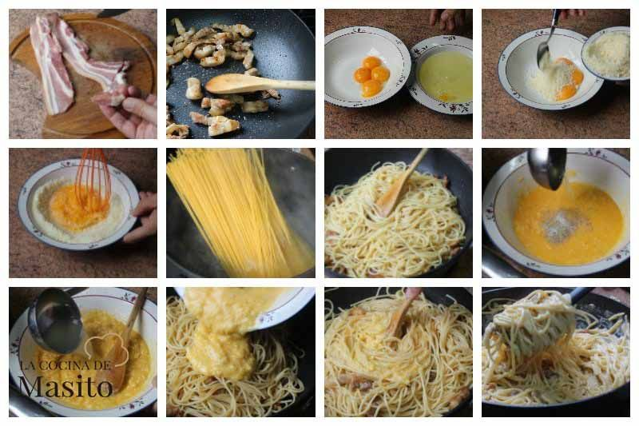
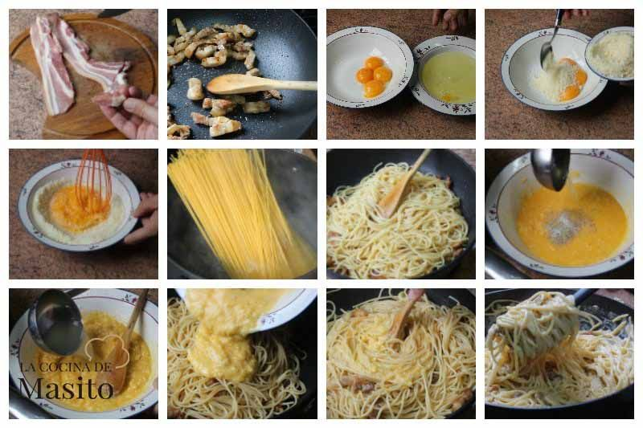

Espaguetis a la carbonara
 

- Para realizar los espaguetis carbonara, lo primero que vamos a hacer es cortar en taquitos la panceta y reservamos.
- En dos platos ponemos por una lado las claras y por otro las yemas de los huevos.
- Añadimos a las yemas el queso rallado para nuestra rica carbonara. Mezclamos bien hasta lograr una masa homogénea.
- Añadimos sal a un cazo con bastante agua y esperamos a que hierva para hacer la pasta.
- Mientras tanto, colocamos una sartén al fuego y comenzamos a freír nuestra panceta con una pizca de sal.
- Ojo, no añadimos aceite de oliva a la sartén, que la panceta se haga con su propia grasita.
- Una vez que empieza a hervir el agua, agregamos nuestra pasta. Dejamos cocer el tiempo recomendado por el fabricante.
- Entre 9 y 11 minutos es el tiempo de cocción de los espaguetis; suele venir indicado en el paquete.
- No tenemos que moverlos ni nada, ellos mismos se irán introduciendo en el agua por efecto del calor.
- Los espaguetis cocidos los echamos directamente (sin agua, claro está) sobre la panceta
- Salteamos durante un par de minutos a fuego medio alto. Transcurrido el tiempo, retiramos la sartén del fuego.